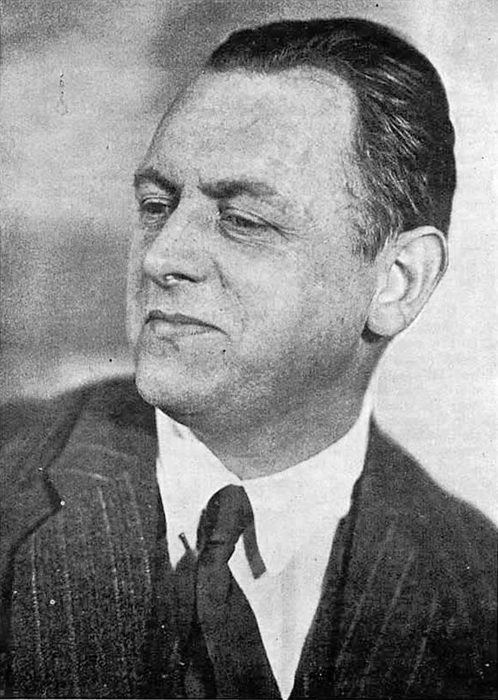
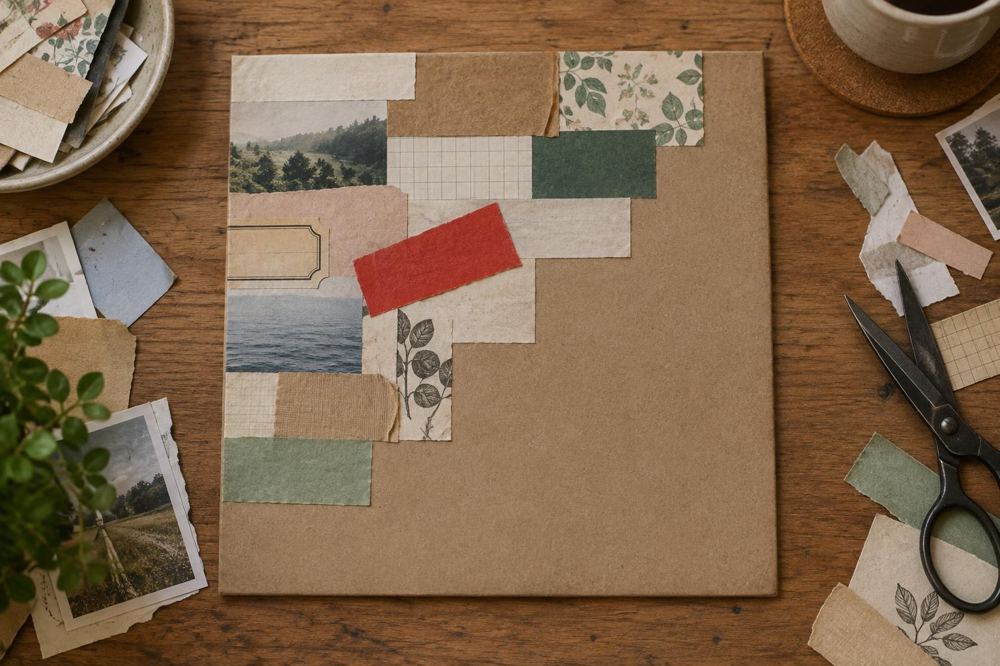
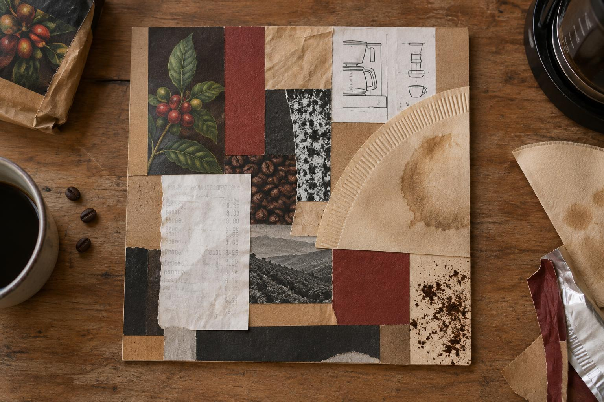

Ганновер, 1887 — Кендал, 1948. Человек, который собирал искусство из трамвайных билетов, чеков и обёрток и назвал это словом Merz.
Художник, который делал картины из трамвайных билетов, фантиков и обёрток — и придумал для этого своё слово: Мерц.

Рваный край — тёплый и живой, резаный — строгий. Соедините оба.
Рваный край — пушистый, резаный — ровный. Попробуйте оба.

Выберите вещь-товарища: кофеварку, свой стол, холодильник, телефон. Соберите её портрет из её же бумажных следов: упаковок, чеков, инструкций, ярлыков. Картон 20×20.
Выберите любимую вещь или игрушку: рюкзак, мяч, плюшевого зайца, велосипед. Соберите её портрет из бумажек её цветов: фантиков, журналов, обёрток. Картон 20×20. Можно делать вместе со своим взрослым.

В следующий раз: Ханна Хёх, подруга Швиттерса, и фотомонтаж «кухонным ножом».
В следующий раз: Ханна Хёх, подруга Швиттерса, и картинки из вырезанных фотографий.